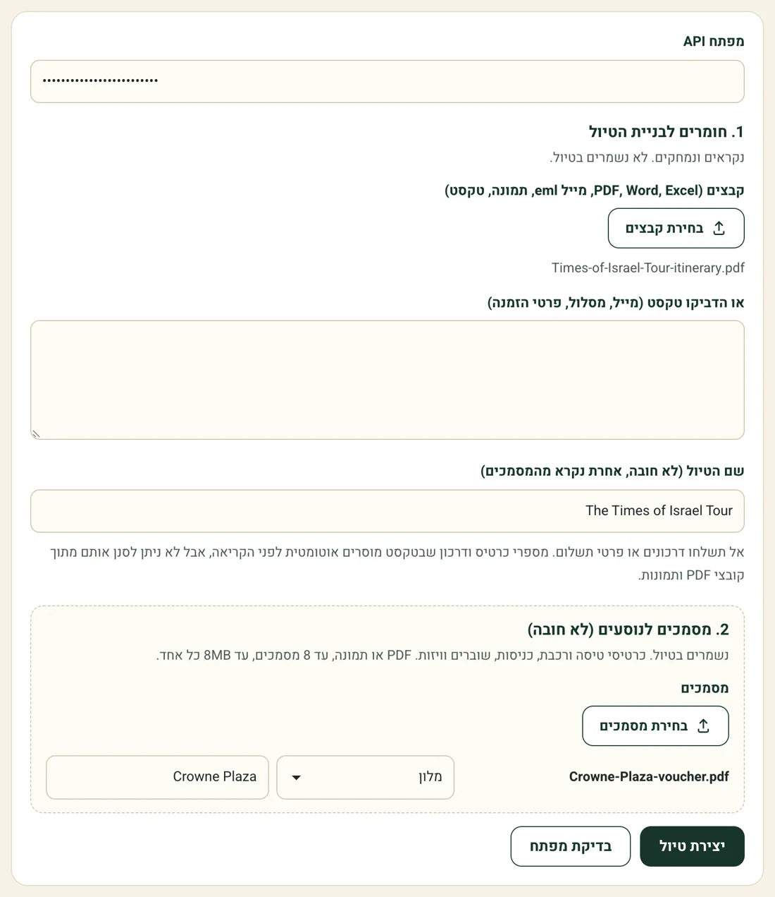
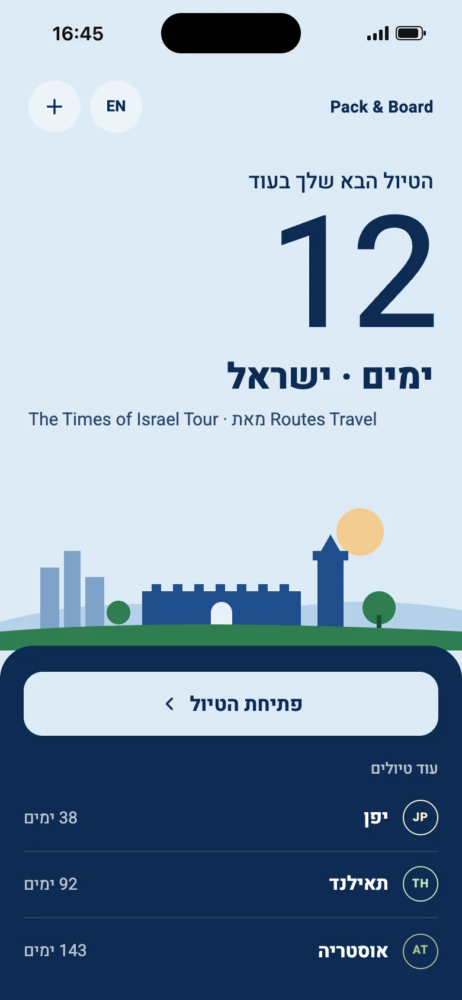
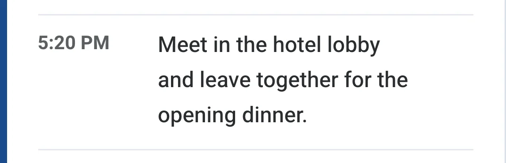
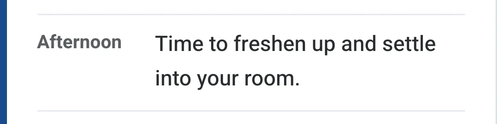
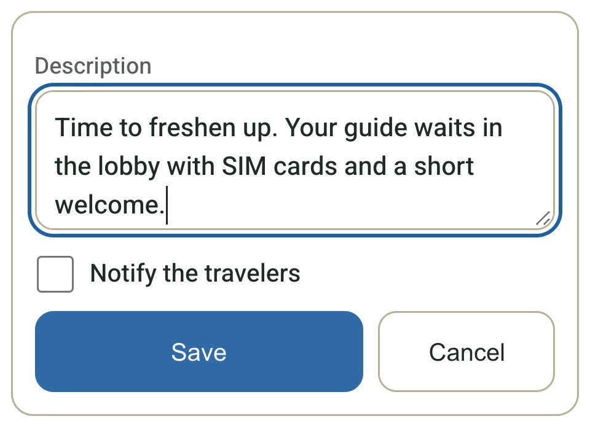
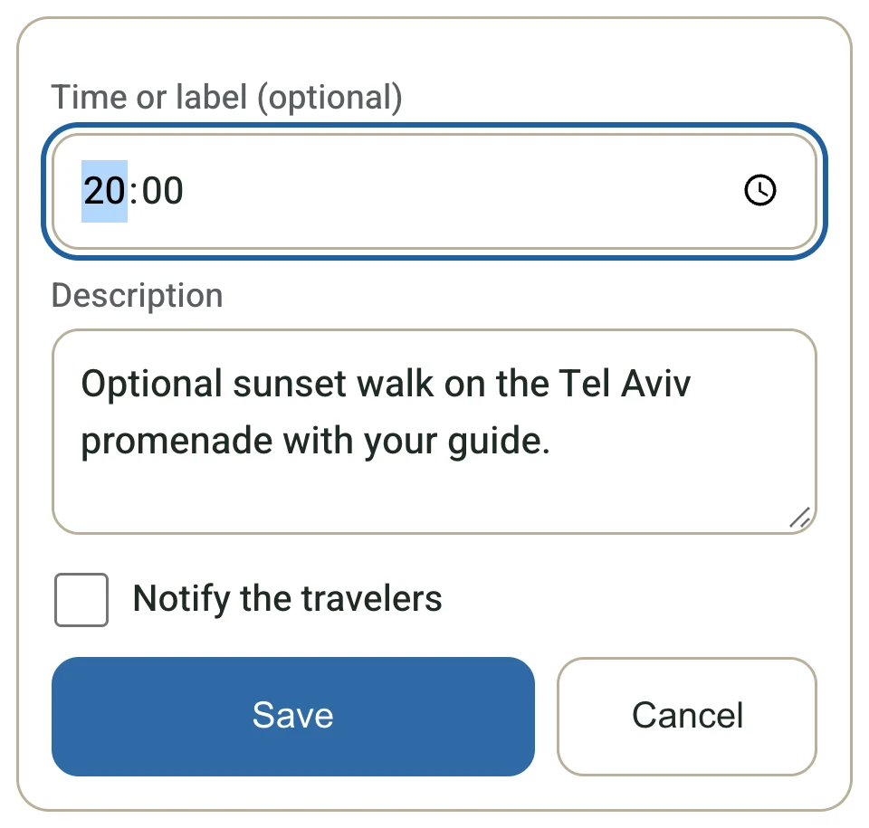

בונים את הטיול ב-API
פעם אחת, בתחילת הדרך. מהמסמכים שכבר יש לכם, בלי להקליד את הטיול מחדש.
מה עושים במסך ה-API
- מדביקים את מפתח ה-API שקיבלתם.
- מצרפים את המסלול כמו שהוא: PDF, Word, Excel, מייל או טקסט.
- מצרפים מסמכים לנוסעים, כמו שובר מלון או כרטיס טיסה. הם נשמרים במדריך.
- לוחצים "יצירת טיול". תוך כדקה המדריך מוכן.
אם משהו במסמכים לא ברור, הטיול ממתין לבדיקה שלנו לפני שהוא נפתח.

מקבלים קישור ופותחים את הטיול
מיד אחרי היצירה מופיע הקישור של הטיול. שולחים אותו למטיילים בוואטסאפ, במייל או בהודעה.



מסך המדריכים: עורכים מתוך המדריך
מכאן כל עדכון נעשה בתוך המדריך, בלי לחזור ל-API ובלי לבנות מחדש. המדריך בשטח ומנהל הטיול רואים כפתור "עריכה" במסך יום אחר יום. המטיילים לא רואים אותו.

מה עוד אפשר במצב עריכה
- להזיז חלק למעלה או למטה.
- למחוק חלק, ולשחזר אותו אם צריך.
- לבטל כל שינוי מתוך ההיסטוריה.
- לבחור אם לשלוח התראה למטיילים. ברירת המחדל: בלי התראה.
בדוגמה: טיול קבוצתי באנגלית של Routes Travel.
עריכת שעה
לוחצים על השעה ומשנים רק אותה. התיאור נשאר כמו שהוא.


עריכת תוכן
לוחצים על התיאור וכותבים מחדש. השעה נשארת כמו שהיא.


הוספת חלק חדש
לוחצים על הפלוס שבין שני חלקים ביום. מוסיפים שעה (לא חובה) ותיאור.


הקישור לא משתנה. המדריך מתעדכן.
אחרי השמירה לא שולחים כלום מחדש.
אותו קישור, לפני העריכה ואחריה
המטיילים פותחים את אותו קישור, או את המדריך ששמרו במסך הבית או באפליקציה, ורואים את התוכנית המעודכנת.
השינויים נשמרים אצלנו בשרת, והמדריך מוסיף אותם בכל פתיחה. כך כל הקבוצה רואה את אותה תוכנית, גם מי שקיבל את הקישור לפני שבוע.
נסו בעצמכם
טיול לדוגמה של Routes Travel, עם עריכה פתוחה. פתחו את "Day by Day" ולחצו על "Edit" בתחתית המסך.
לפתיחת הטיול לדוגמהזה טיול לדוגמה. כל מי שפותח את הקישור יכול לערוך, והשינויים מופיעים אצל כולם.